La unión P-N, la base del diodo
Al unir un semiconductor tipo N con uno tipo P formamos un componente denominado diodo, que tiene un comportamiento muy particular.
Al unirlos se produce una atracción entre los electrones del lado N y los huecos del lado P. Los electrones se desplazan hasta ocupar los huecos que tienen cerca y se crea una zona en el centro donde no hay ni electrones ni huecos, por lo que el material no permite el paso de corriente eléctrica. Se ha creado una barrera de potencial (zona Z) que impide la conducción a través de la unión.
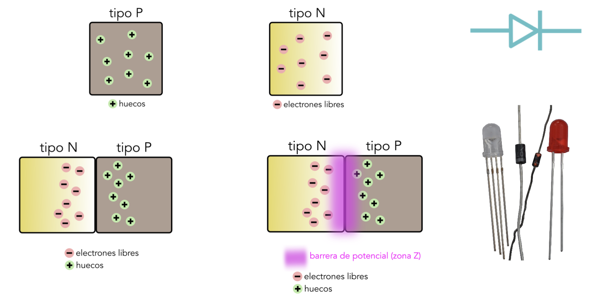
La barrera de potencial se elimina o se aumenta en función de la polarización de la alimentación eléctrica, permitiendo o no el paso de la corriente. Según esto podemos hablar de dos tipos de conexiones:
Polarización directa
|
Al conectar el polo negativo (cátodo) del generador con la parte N del semiconductor y el polo positivo (ánodo) con la parte P se produce la desaparición de la barrera de potencial y la corriente puede circular. Los electrones se ven atraídos por el positivo de la fuente, por lo que abandonan los huecos, que irán llenándose con otros electrones que "huyen" del negativo de la fuente. Se puede mantener este flujo de electrones a través de la unión, por lo que se establece una corriente eléctrica. En la figura se ha mostrado el sentido del movimiento real de los electrones en rosa y el sentido convencional de la corriente (el que usamos siempre) en rojo. La unión P-N se comporta como si tuviéramos un circuito cerrado (aunque presenta una ligera caída de tensión), por lo que la lámpara se enciende. |
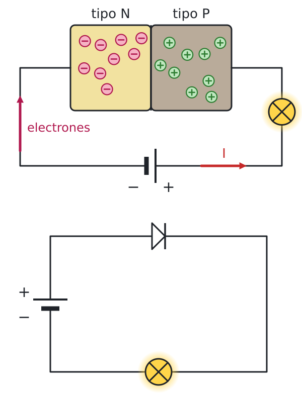 Ampliar |
Polarización inversa
|
Al conectar el polo negativo (cátodo) de la pila con la parte P del semiconductor y el polo positivo (ánodo) con la parte N aumenta la barrera de potencial. Ahora, los electrones se ven atraídos por el positivo de la fuente hacia la izquierda, alejándose aún más de la unión, mientras que los huecos se verían atraídos hacia el polo negativo (derecha), alejándose también. La unión se hace aún más aislante, por lo que se comporta como un circuito abierto y la corriente no puede circular. La lámpara permanecerá apagada. |
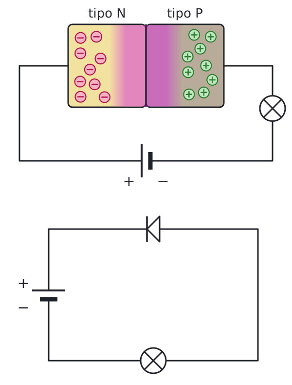 Ampliar |
Resumiendo, un diodo es un componente electrónico que, en polarización directa se comporta como un interruptor cerrado permitiendo el paso de la corriente mientras que en polarización inversa se comporta como un interruptor abierto o como un material aislante.
En el siguiente montaje en 3D puedes ver qué pasa dentro de la unión P-N. Pulsa «Unir P y N» para ver cómo se forma la zona Z; después, conecta la pila en directa o en inversa y cambia su tensión. Fíjate en cuándo se enciende la lámpara y en cómo se reparte la tensión entre la unión y la lámpara:
Para tener un imagen más clara y completa de lo que realmente sucede en la unión P-N y como funciona el diodo, puedes ver este vídeo donde, además, se adelanta algún ejemplo de uso y se muestra cómo utilizar el polímetro para comprobar un diodo:
Diodos rectificadores
Ya hemos visto que el diodo es un dispositivo electrónico que solo deja pasar corriente en un sentido y no la deja pasar en sentido contrario. Esto permite que se utilicen para rectificar la corriente eléctrica, es decir, transformar corriente alterna (CA) en corriente continua (CC). Esta es la utilidad primordial de los diodos.
Los diodos discretos son físicamente componentes cilíndricos. Suelen ser negros y tienen un extremo de color plateado:
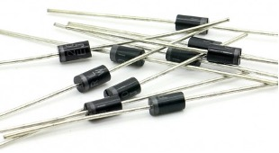
Los terminales del diodo se llaman ánodo y cátodo y hay que conectarlos correctamente a la alimentación para que el diodo deje pasar la corriente a través suyo. Según lo conectemos, tendremos las dos posibilidades:
- Polarización directa: positivo en el ánodo y negativo en el cátodo. El diodo deja pasar la corriente eléctrica.
- Polarización inversa: positivo en el cátodo y negativo en el ánodo. El diodo interrumpe el paso de la corriente eléctrica.
Para poder saber cuál es el ánodo y cuál el cátodo (imprescindible para que funcione como queremos) está el extremo plateado del diodo: su extremo plateado marca siempre el lado del cátodo.
Su símbolo para circuitos eléctricos es el siguiente:
Si la corriente va en el sentido de la “flecha” del símbolo, el diodo la dejará pasar. Si intenta ir en contra, no habrá ninguna corriente porque el diodo se comportará como un interruptor abierto. En resumen:
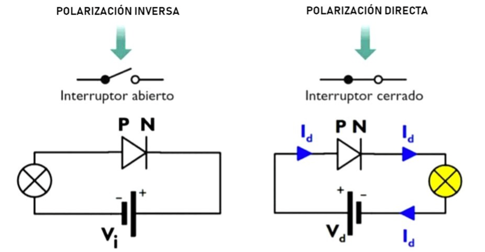
RECTIFICADOR DE MEDIA ONDA
Una corriente alterna (CA) es aquella que cambia constantemente de sentido y además normalmente tiene forma de onda senoidal:
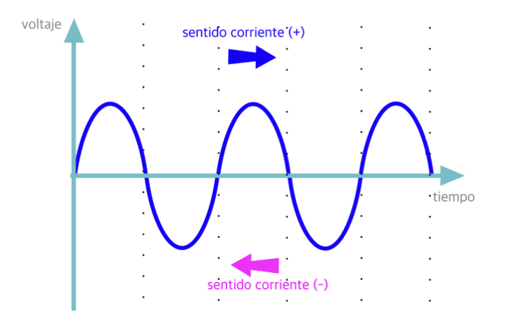
Por otro lado, la corriente continua (CC) es aquella que siempre va en el mismo sentido y además el voltaje suele ser constante, aunque no tiene por que ser siempre así. Existen algunos tipos de corriente continua en los que el voltaje puede incluso anularse en ciertos momentos: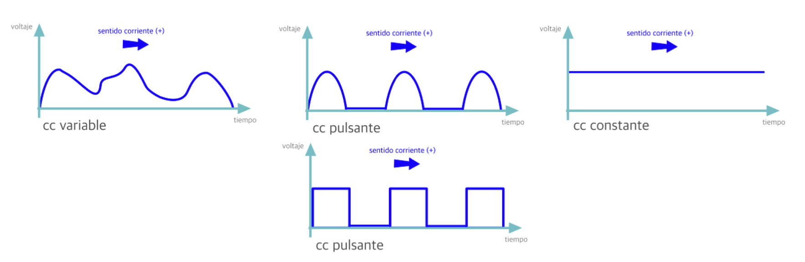
Mira lo que ocurre cuando colocamos un diodo a la salida de una fuente de tensión alterna:
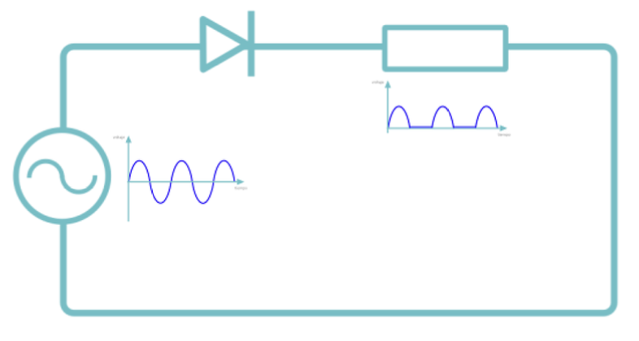
Cuando la corriente alterna pasa por el diodo sólo lo puede hacer cuando es positiva, mientras que cuando es negativa y viene en sentido contrario no puede pasar, de manera que a la resistencia solo le llega corriente en un solo sentido, por lo tanto la corriente es continua. En este caso es una corriente que va a intervalos, lo que se denomina corriente continua pulsante. Por lo tanto, un circuito rectificador de media onda es, en su forma más simple, un único diodo.
La corriente continua pulsante es poco útil, ya que va a pulsos, y no serviría ni para cargar el móvil ni para otros muchos usos que le damos a la corriente continua. Para mejorar la señal de salida es necesario añadir al circuito un condensador en paralelo con la resistencia, de manera que cuando la corriente pase por el diodo y llegue a la resistencia el condensador también se cargue. Así cuando la corriente sea negativa y no pueda pasar por el diodo el condensador se descargará y mantendrá el flujo de corriente, que no será 0 amperios en ningún momento.
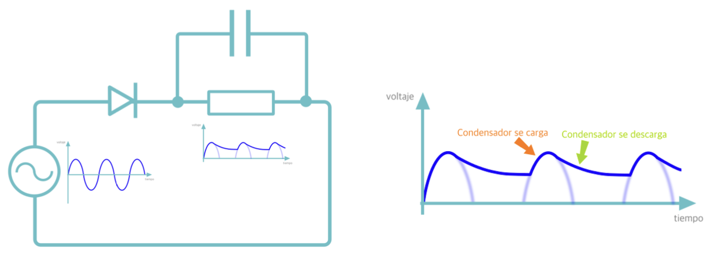
Te dejo el circuito del rectificador de media onda simulado, con un interruptor con el que puedes conectar o desconectar el condensador y ver cómo afecta a la tensión de salida (Vsalida):
La simulación arranca parada. Antes de pulsar Continuar, piensa qué forma tendrá Vsalida con el condensador conectado y sin él. Después pulsa Continuar y usa el interruptor para comprobarlo. (En el móvil, Continuar está en el panel lateral que se abre con la pestaña ‖ del borde derecho.)
Abrir la simulación en una pestaña nueva
RECTIFICADOR DE ONDA COMPLETA
El rectificador de media onda es un circuito muy simple y que sirve para muchas aplicaciones. Sin embargo, en ocasiones necesitamos que la tensión rectificada no tenga tanto "rizado", sino que sea lo más constante posible. Para estos casos podemos utilizar un circuito algo más completo que es el rectificador de onda completa. En este caso necesitamos cuatro diodos, que se conectan en una configuración que se denomina puente de diodos y que tiene esta forma:
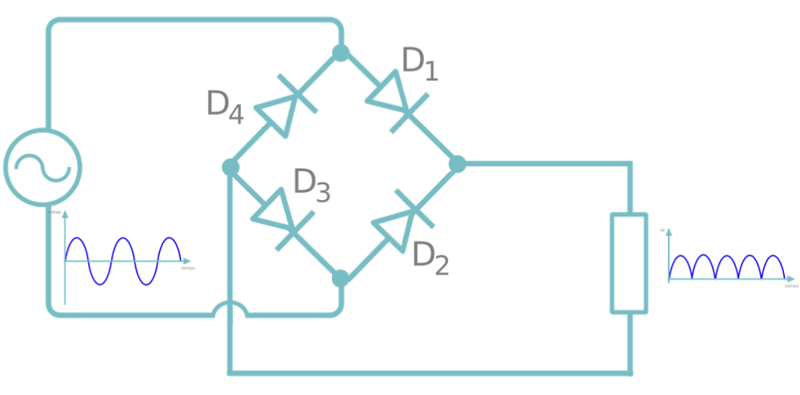
El circuito funciona de la siguiente manera:
- Semionda positiva: la corriente circula por D1, atraviesa la carga de arriba a abajo y vuelve a la fuente por el diodo D3.
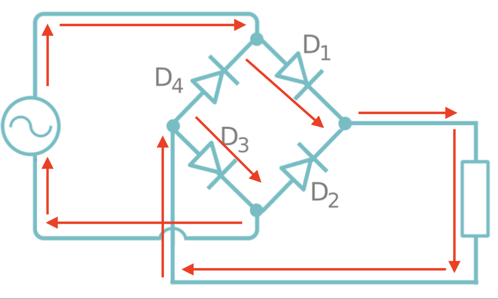
- Semionda negativa: la corriente circula por D2, atraviesa la carga de arriba a abajo y vuelve a la fuente por el diodo D4.
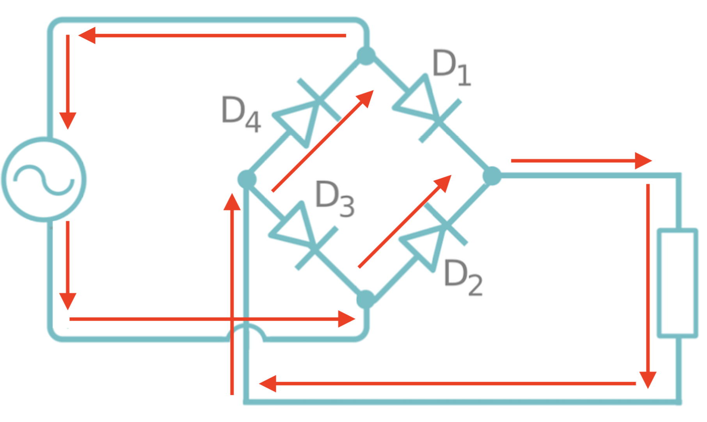
Así, tanto en la semionda positiva como en la negativa llega tensión a la carga y, en ambas semiondas, el sentido de la corriente es el mismo (de arriba a abajo), por lo que la corriente es continua.
De nuevo, podemos mejorar mucho el rizado de la tensión añadiendo un condensador en paralelo con la carga:
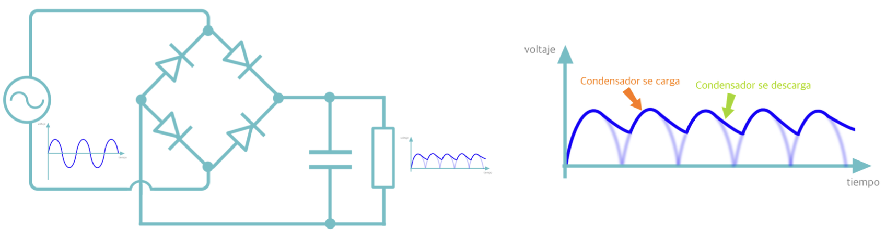
Como en el caso del rectificador de media onda, te dejo una simulación del circuito rectificador de onda completa para que puedas experimentar a poner o quitar el condensador (con el interruptor) o a cambiar la capacidad del condensador para ver cómo varía el rizado de la tensión de salida (Vsalida):
Abrir la simulación en una pestaña nueva
Fíjate que la tensión de salida es aproximadamente de 3,8 V, mientras que la fuente es de 5 V. Hay que tener en cuenta que la corriente siempre está pasando por dos diodos en serie, por lo que se suman las caidas de tensión que presentan ambos diodos al conducir y supone más de un voltio. Esto hay que tenerlo en cuenta al diseñar una fuente de alimentación y lo comprobaréis al hacer la tarea de esta sección.
Como resumen, en este vídeo tienes explicados los circuitos rectificadores con animaciones muy didácticas:
Diodos emisores de luz (LED)
Son un tipo especial de diodo que, cuando permite el paso de la corriente, emite una luz de un color determinado.
Los LEDs que usaremos nosotros tendrán este aspecto:
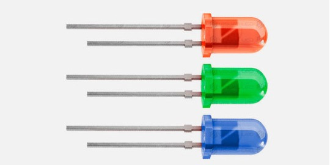
Para que un diodo LED funcione y se encienda, tenemos que alimentarlo con el voltaje positivo en el ánodo y el negativo en el cátodo. Si lo hacemos al revés, no conducirá la corriente y permanecerá apagado.
Para poder saber cuál es el ánodo y cuál es el cátodo, tenemos dos “pistas”.
- La pata del cátodo se distingue porque en ese lado la cápsula del LED tiene una parte plana.
- Si las patas son de distinto tamaño, la más larga es el ánodo y la más corta el cátodo.
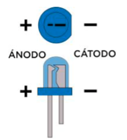
En el caso del simulador de TinkerCAD puedes distinguir el ánodo porque es la pata que está un poco “doblada”. Además, si tienes dudas, al poner el ratón sobre una de las dos patas te aparecerá un cartelito que te dirá si es el ánodo o el cátodo.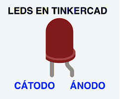
El símbolo eléctrico del LED es como el del diodo convencional, pero con un par de flechas que representan la luz que emite este diodo:
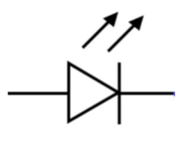
Como ya vimos antes, siempre que usemos un LED con Arduino tendremos que conectarle una resistencia en serie de unos 220 ohmios. Si no hacemos esto, el LED se destruirá y ya no nos servirá.LED RGB
Hay un tipo de LED que combina interiormente tres LEDs de diferentes colores: rojo, verde y azul. Exteriormente tiene cuatro terminales: un terminal que sirve de cátodo común (y que habrá que conectar al negativo de la fuente de alimentación o a tierra) y otros tres terminales que sirven de ánodos para cada uno de los tres LEDs (rojo, verde y azul). Su aspecto es este:
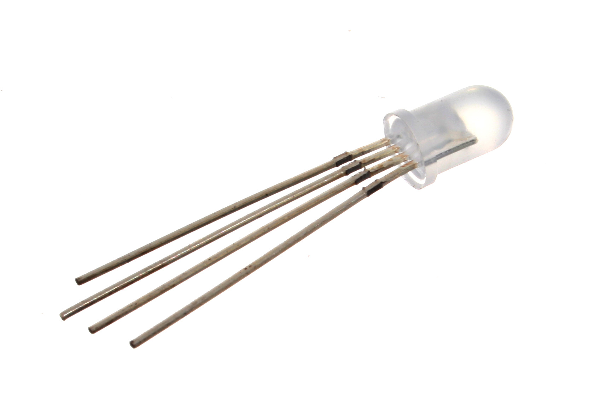
En este tipo de LEDs, el terminal más largo es el cátodo. En el caso de TinkerCAD, el LED RGB lo puedes encontrar entre los componentes básicos y puedes ver a qué color pertenece cada terminal pasando por encima el puntero del ratón. De todas formas, te enseño aquí cuál es cada uno:
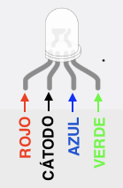
Si se iluminan los tres colores a la vez, se obtiene una luz blanca. Si se iluminan con diferentes intensidades los tres, podremos obtener muchísimos otros colores como mezcla de los tres primarios.
Diodos Zener
El Zener consiste en una unión PN especial, muy dopada, diseñada para conducir en la dirección inversa (diodo polarizado inversamente) cuando se alcanza un determinado voltaje especificado, llamado voltaje o tensión Zener.
Una vez alcanzada la tensión Zener, el diodo es capaz de conducir una corriente importante en dirección inversa (de cátodo a ánodo) mientras que la tensión en los terminales del Zener no varía, permanece prácticamente constante aunque aumente la tensión de alimentación. Por esto, el diodo Zener es un componente esencial de los reguladores de tensión, manteniendo la tensión casi constante con independencia de que se presenten grandes variaciones de la tensión de red, de la resistencia de carga o de la temperatura.
En esta imagen puedes ver el aspecto de un diodo Zener:
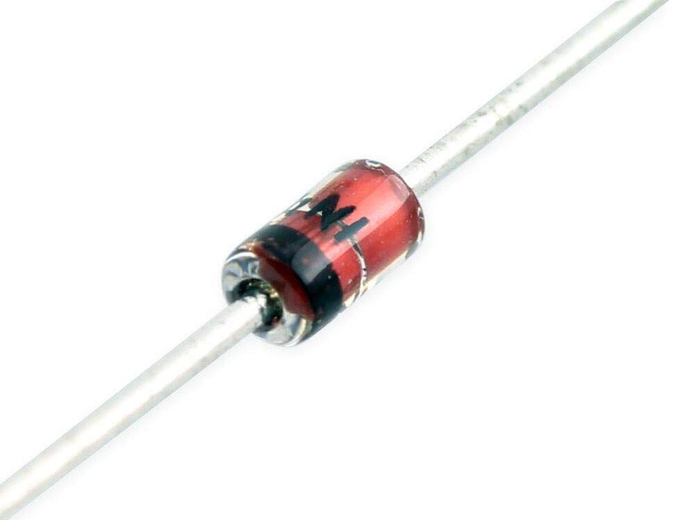
Si un diodo Zener se polariza directamente, toma las características de un diodo rectificador básico (la mayoría de casos), pero si se polariza inversamente, el diodo mantendrá una tensión constante. No actúa como rectificador sino como un estabilizador de tensión. Variando la tensión V a valores mayores que la tensión de ruptura del Zener, Vz se mantiene constante.
Aquí puedes ver la curva característica de tensión-intensidad para un diodo Zener:
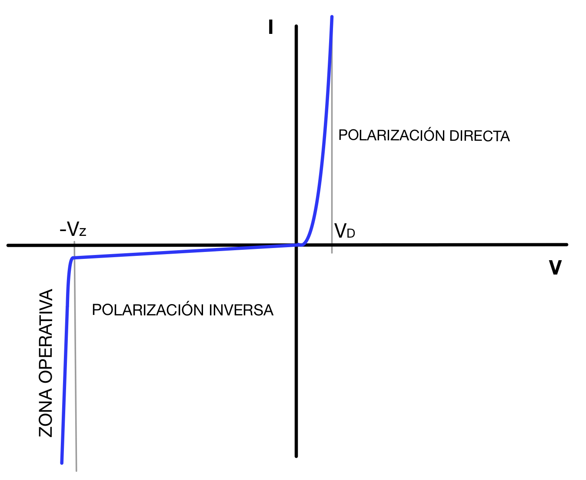
Analizando la curva V-I del diodo se ve que conforme se va aumentando negativamente el voltaje aplicado al diodo, la corriente que pasa por él aumenta muy poco, pero una vez se llega a un determinado voltaje (tensión Zener, Vz), el aumento del voltaje (siempre negativamente) es muy pequeño, pudiendo considerarse constante. Para este voltaje, la corriente que atraviesa el diodo, puede variar en un gran rango de valores. A esta región se le llama la zona operativa y es la característica del diodo Zener que se aprovecha para que funcione como regulador de voltaje, pues el voltaje se mantiene prácticamente constante para una gran variación de corriente.
Fíjate que la tensión Zener (de varios voltios) es muy superior a la tensión que aparece cuando se polariza de forma directa (VD, que suele rondar los 0,7 voltios).
El símbolo eléctrico del diodo Zener es parecido al de un diodo normal pero tiene dos trazos a los lados que simbolizan la forma de su curva característica:
APLICACIONES DEL DIODO ZENER
Una de las aplicaciones más usadas del diodo Zener es como referencia de voltaje, y como tal se usa en muchos circuitos. Otras aplicaciones son:
Regulador de voltaje
Un regulador de voltaje con diodo Zener ideal mantiene un voltaje predeterminado fijo a su salida, sin importar las variaciones de voltaje en la fuente de alimentación y/o las variaciones de corriente en la carga. Recuerda que las fuentes reales tienen una resistencia interna, por lo que el voltaje disponible puede disminuir si aumenta la corriente en la carga y viceversa. Esas fluctuaciones las podría controlar un Zener.
En este circuito de ejemplo, la fuente de alimentación va fluctuando su valor (Vfuente) constantemente entre 5,7 y 7,7 voltios, pero la tensión del Zener (Vzener) se mantiene prácticamente constante al estar polarizado en inversa, por lo que mantiene prácticamente constante la tensión que ve la carga de salida (Vsalida).
Abrir la simulación en una pestaña nueva
Recortador de tensión (clipper)
En este caso dos diodos Zener se colocan contrapuestos conectados por los ánodos y nos recortará la onda de la fuente de tensión de entrada:
Abrir la simulación en una pestaña nueva
En este circuito de ejemplo, la Vfuente oscila entre -10 y +10 voltios, mientras que las tensiones Zener son de alrededor de 5,5 voltios. El circuito recortará la salida a un voltaje máximo establecido por el voltaje Vz del diodo Zener que esté en inversa más 0.7 voltios aproximadamente del diodo Zener en directa. Por eso la tensión de salida se recorta a aproximadamente ± 6,2 voltios.
Desplazador de voltaje
Este circuito reduce el voltaje que se pone en su entrada en la cantidad de voltios que tiene el zener. Si el voltaje de entrada es de 12 voltios y el voltaje del Zener es de 5,5 voltios, el voltaje en la salida es de unos 6,5 voltios.
Abrir la simulación en una pestaña nueva
Si el voltaje de entrada varía, también variará el voltaje de salida. Prueba a cambiar el valor de Vfuente y comprueba como varía en consecuencia el voltaje en la carga, Vsalida.
TAREA 4 - DISEÑO CIRCUITO RECTIFICADOR DE 5 VOLTIOS
En esta tarea tendréis que seguir los pasos que os voy a indicar para diseñar un circuito que rectifique la tensión de la red (230 V y 50 Hz de CA) y genere una tensión de salida compatible con un puerto USB (5 V de CC). Esta es una tarea individual.
Para diseñar y simular el circuito vamos a utilizar CircuitJS, el simulador de circuitos de Paul Falstad. Funciona en el navegador, sin instalar nada, en cualquier dispositivo con conexión a Internet. Este enlace lo abre en castellano, con fondo blanco y con el espacio de trabajo vacío: Abrir CircuitJS con un circuito en blanco. Los gestos básicos (cambiar un valor, dibujar un cable y entregar) están en la ficha CircuitJS en 3 gestos (PDF).
Voy a explicaros paso a paso lo que vamos a ir haciendo para que vayáis aprendiendo poco a poco a manejar el programa y, además, veáis la utilidad de cada parte del circuito.
Para realizar un circuito rectificador que haga todo lo que queremos, necesitamos diseñar varias etapas:
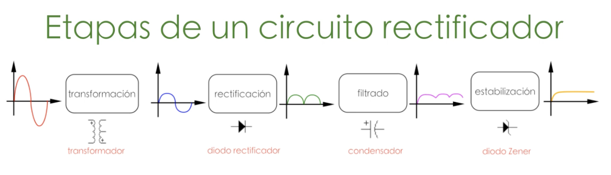
Vamos a ir diseñando el circuito etapa a etapa:
Transformación (transformador)
Lo primero que tenemos que hacer es adaptar el nivel de tensión de entrada (en este caso, 230 V) al nivel de salida que queremos obtener (en este caso, 5 V). Para modificar el voltaje utilizamos una máquina eléctrica denominada transformador.
El transformador es una máquina que funciona en CA, por eso es lo primero que vamos a incluir en nuestro circuito. Tenemos que transformar la tensión antes de rectificar la corriente.
Un transformador utiliza el fenómeno de la inducción electromagnética para variar el voltaje de una onda de CA. Consta de dos devanados o bobinas de cable (llamados primario y secundario), que están arrollados sobre un mismo núcleo de material ferromagnético (normalmente formado por chapas de acero al silicio).
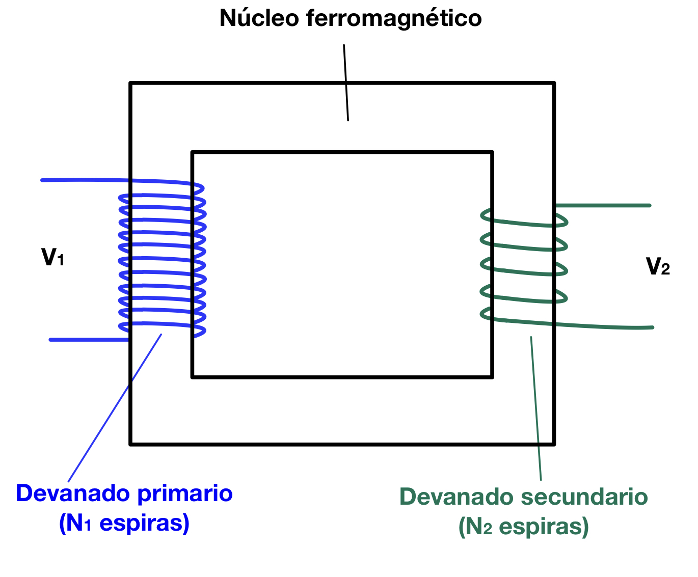
Cuando la corriente circula por el devanado primario, aparece un flujo magnético. Este flujo magnético recorre muy fácilmente el núcleo de hierro del transformador, llegando al devanado secundario. En este último tiene lugar el efecto contrario: al atravesar el flujo magnético el interior del devanado, aparece una corriente eléctrica en el cable de la bobina secundaria.
Si controlamos el número de vueltas de cable que tienen la bobina primaria (N1) y la secundaria (N2), podemos controlar la variación de la tensión entre ambas bobinas. En concreto, en un transformador ideal se cumple que:
| \[\frac{N_{1}}{N_{2}}=\frac{V_{1}}{V_{2}}=\frac{I_{2}}{I_{1}}\] |
Donde:
- V1: tensión del primario
- V2: tensión en el secundario
- N1: número de espiras del devanado primario
- N2: número de espiras del devanado secundario
Al cociente N1/N2 se le conoce como relación de transformación. Un detalle importante: los 230 V de la red son un valor eficaz. La tensión alterna sube y baja, y su valor máximo (de pico) es √2 veces mayor: 230 · √2 ≈ 325 V. CircuitJS pide ese valor máximo. Podríamos pensar que la relación de transformación debería ser 325/5 para obtener 5 V a la salida, pero tras el transformador habrá un puente de diodos que introduce una caída de tensión, así que necesitamos algo más de 5 V de pico en el secundario. ¿Cuánto más? Lo vas a estimar tú con la simulación: la ventaja de simular es que puedes ir variando parámetros hasta obtener lo que quieres a la salida.
Para empezar, como primera aproximación, vamos a buscar unos 6 V de pico en el secundario: N1/N2 = 325/6 ≈ 54.
Los componentes se añaden desde el menú Dibujar. El transformador es un componente pasivo: Dibujar → Componentes pasivos → Trasformador (el simulador lo escribe así).
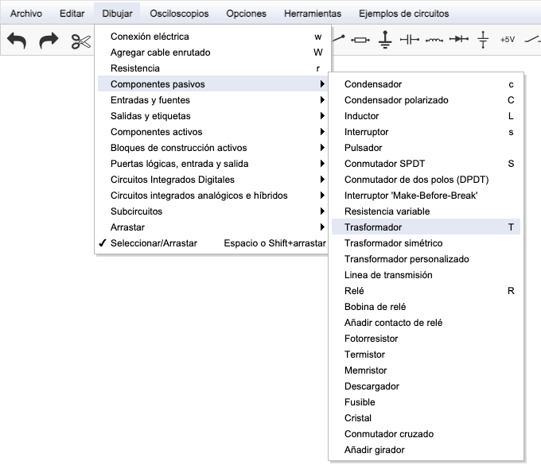
Fíjate que al lado aparece una «T»: también puedes añadir un transformador pulsando la tecla T (mayúscula; con la t minúscula añadirías una etiqueta de texto). Las teclas abreviadas ahorran tiempo con los componentes que se repiten.
Dibuja el transformador en la parte izquierda del espacio de trabajo arrastrando en horizontal, de izquierda a derecha: así queda el primario a la izquierda y el secundario a la derecha. (Si arrastras en diagonal, aparece girado, con el primario arriba y el secundario abajo.)
Para seleccionar un componente ya dibujado, pulsa la tecla Espacio (modo de seleccionar y arrastrar) y haz doble clic sobre él: se abre su ventana de propiedades. En la del transformador nos interesa Razón (N1/N2): escribe 54 y pulsa OK.
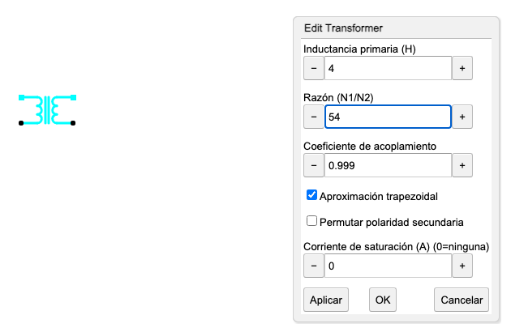
Para terminar esta etapa, añade la fuente: Dibujar → Entradas y fuentes → Fuente de tensión CA (2 terminales).
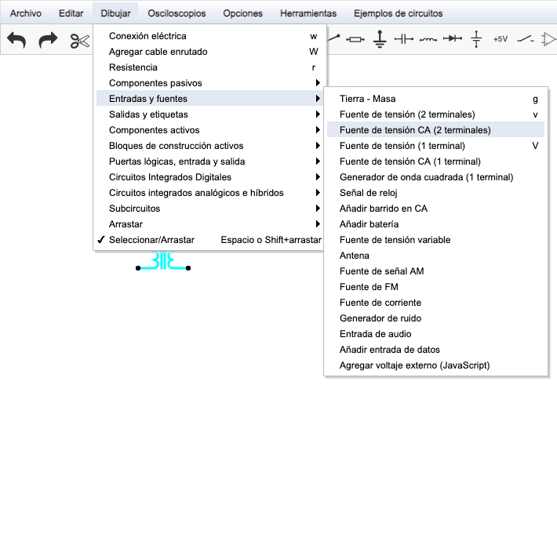
Dibújala a la izquierda del transformador y une cada uno de sus terminales con uno del primario mediante cables (Dibujar → Conexión eléctrica, tecla w: pulsa y arrastra de un punto a otro). La fuente viene con los valores de la red de Estados Unidos: 120rms (120 V eficaces) y 60 Hz. Haz doble clic sobre ella y cambia Tensión máxima a 325 y Frecuencia (Hz) a 50; después, OK.
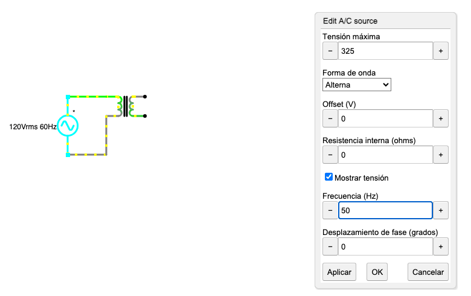
Te debería quedar así:
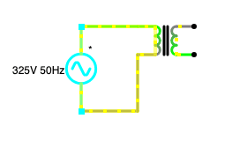
Rectificación (diodo rectificador)
Una vez reducida la tensión a unos 6 V de pico, llega el momento de pasar de CA a CC. Para eso vamos a utilizar un puente de diodos para hacer un rectificador de onda completa, como ya hemos visto. Los diodos están en Dibujar → Componentes activos → Diodo (o tecla d minúscula). Cada diodo se dibuja en el sentido en que arrastras: del ánodo (el triángulo) al cátodo (la raya).
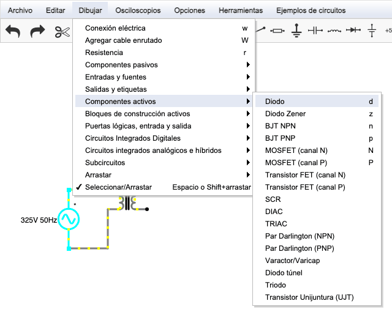
Dibuja 4 diodos en forma de rombo, con los dos de la derecha apuntando hacia el vértice derecho y los dos de la izquierda saliendo del vértice izquierdo. Para mover varios a la vez, pulsa Espacio, dibuja con el ratón un rectángulo que los rodee y arrástralos.
Une el secundario del transformador con los vértices superior e inferior del puente. Te debería quedar así (dos cables que se cruzan sin un punto no están conectados):
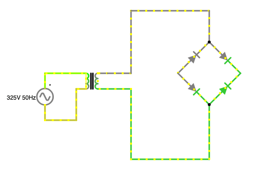
Filtrado (condensador)
Con el circuito actual la tensión ya no cambia de signo, pero todavía cae hasta 0 V en cada ciclo. Para mantenerla pondremos un condensador electrolítico (por tanto, polarizado) de 47 µF, un valor muy común en electrónica: Dibujar → Componentes pasivos → Condensador polarizado (o tecla C mayúscula).
Haz doble clic sobre él y escribe 47u en Capacidad (F) (la u significa micro: si escribes 47 sin la u, el simulador lo toma como 47 faradios) y pulsa OK. Conecta el positivo (+) al vértice derecho del puente y el negativo al vértice izquierdo.
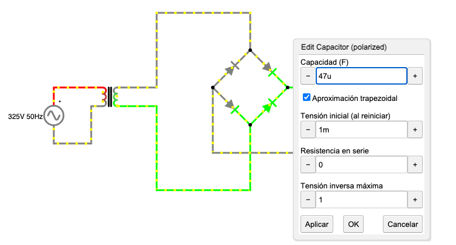
Para probar el circuito, añade una carga: una resistencia (Dibujar → Resistencia, tecla r; trae 1 kΩ, déjala así) en paralelo con el condensador.
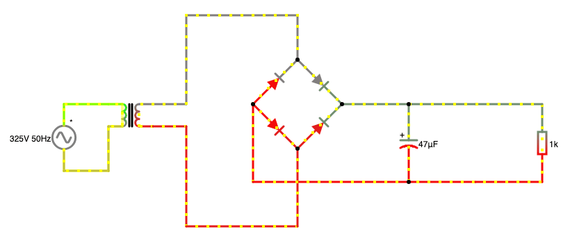
Para ver la tensión y la corriente en la carga, haz clic derecho sobre la resistencia y elige Ver en osciloscopio nuevo.
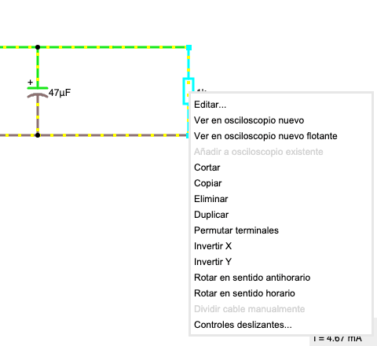
La simulación está en marcha desde que abriste el enlace, así que la gráfica empieza a dibujarse enseguida en la parte inferior; Reiniciar la vuelve a empezar. Deberías ver algo así:
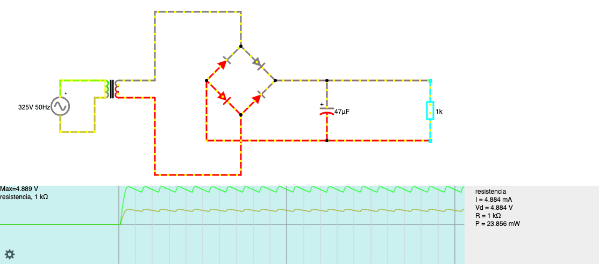
La curva verde es la tensión y la amarilla, la intensidad. La tensión ya no baja a cero, pero oscila entre unos 4,2 y 4,9 V: es el rizado. Para eliminarlo añadiremos una última etapa.
Estabilización (diodo Zener)
Añade un diodo Zener (Dibujar → Componentes activos → Diodo Zener, tecla z) en paralelo con la carga y con la raya (cátodo) hacia el positivo, es decir, polarizado en inversa, y una resistencia de 100 Ω en serie entre el condensador y el Zener, que soporta el resto de la tensión (doble clic sobre ella, 100, OK).
El Zener que trae el simulador es de 5,6 V. Para que estabilice a 5 V, haz doble clic sobre él y pulsa Crear nuevo modelo simple:
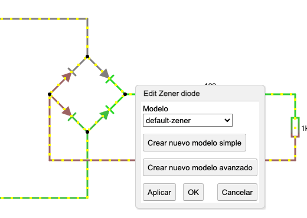
En Tensión de ruptura escribe 5 y pulsa OK:
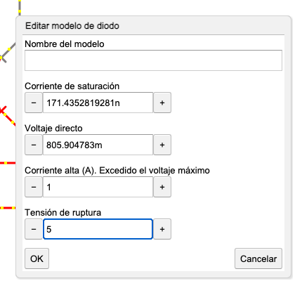
En Modelo aparece seleccionado zener-5: pulsa OK.
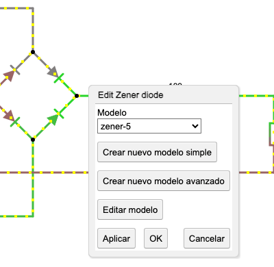
Si miras ahora el osciloscopio, verás que el problema no está resuelto: la tensión en la carga es aún menor que antes (entre unos 3,8 y 4,4 V) y sigue oscilando.
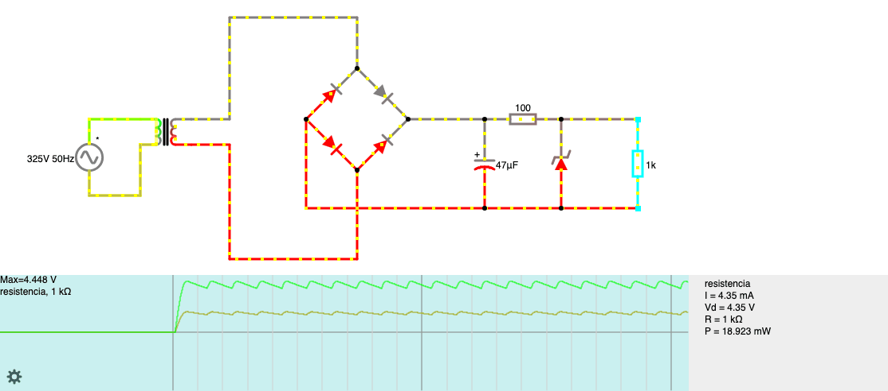
Al Zener no le llegan 5 V, así que no entra en su zona de ruptura y no estabiliza. Este es el momento de reducir la relación de transformación (doble clic en el transformador) hasta que la tensión en la carga quede prácticamente constante y cerca de 5 V. Probad valores hasta conseguir un resultado parecido a este:
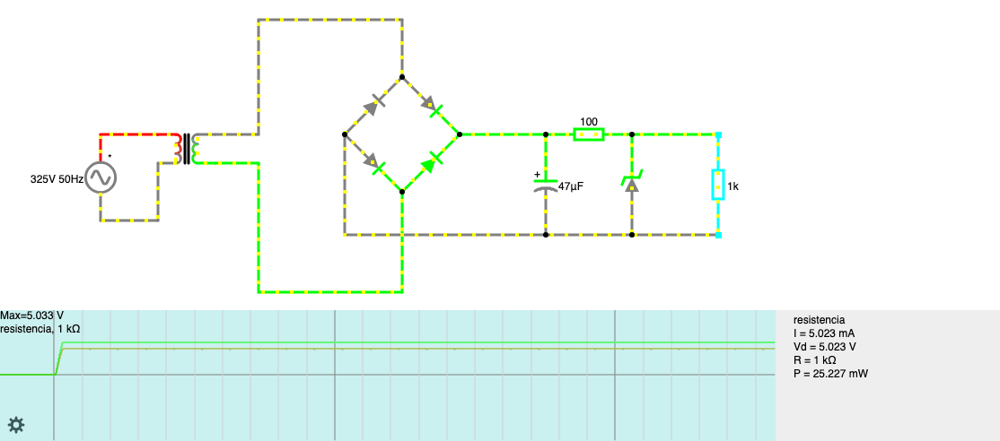
Como veis, hemos conseguido un circuito que transforma la corriente alterna de 230 V y 50 Hz en corriente continua de unos 5 V prácticamente constante. El diseño ya está terminado: solo queda entregarlo.
Entrega de la tarea
Entrega en la tarea «Circuitos electrónicos: entregas individuales» de Moodle las dos cosas, en la misma sesión:
- El enlace del circuito: Archivo → Exportar como enlace… → Copiar al portapapeles, y pégalo en el texto en línea, en una línea que empiece por TAREA 4: seguida del enlace.
- El archivo del circuito: Archivo → Guardar como…, deja el nombre que propone el simulador y pulsa OK; sube el archivo descargado antes de apagar el ordenador.
No pongas tu nombre ni en el archivo ni dentro del circuito: Moodle ya sabe de quién es cada entrega. No uses Recuperar auto salvado.
Para seguir otro día: abre el enlace de tu entrega; si no abre, descarga el archivo de la entrega y cárgalo con Archivo → Abrir archivo… Al terminar, sustituye el enlace y el archivo de la TAREA 4 por los nuevos, sin borrar lo que hayas entregado de las otras TAREAS.
Cómo se valora: rúbrica de las entregas individuales (PDF).
Lista desordenada
Ordena las etapas de la fuente de alimentación de la TAREA 4, de la red a la carga.
- Red eléctrica: 230 V eficaces de corriente alterna
- Transformador: reduce la tensión alterna
- Puente de diodos: rectifica, la tensión ya no cambia de signo
- Condensador: filtra y deja solo un pequeño rizado
- Diodo Zener: estabiliza la tensión en su valor Zener
- Carga: recibe unos 5 V de continua prácticamente constante
Test
Piensa en la polarización de cada diodo y en las caídas de tensión.